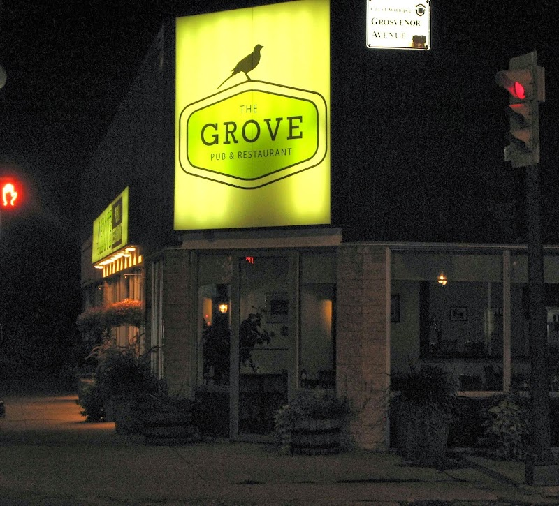

A pint at The Grove Pub, a short walk from the Corydon Airbnb

Not every night on Corydon needs to start with a menu of small plates and a wine list. If you're staying at the Corydon/Crescentwood Airbnb and just want a straightforward pub dinner and a pint, The Grove Pub & Restaurant is a few minutes' walk away on Stafford Street, just off Corydon itself.
What it is
The Grove is a neighbourhood gastropub, the kind of place with wings, poutine, burgers, fish and chips, and pizza on the menu alongside a rotating beer list, rather than a destination restaurant you need to plan around. It has a cozy indoor bar and dining room plus a small outdoor patio for warmer evenings, and it leans toward a casual, come-as-you-are crowd rather than a dressed-up one.
Getting there
The pub sits at 164 Stafford Street, a short residential walk from the Airbnb and just a block or two off Corydon Avenue itself, so it's an easy option on a night when you don't feel like going far. It's open into the evening most nights of the week, with later hours on weekends, check ahead for the current schedule if you're planning a specific night, since pub hours can shift with the season.
Good to know: The patio is small, so on a busy summer evening you may end up inside, that's still a fine option, since the indoor bar is the heart of the place anyway. No reservations are generally needed for a casual weeknight stop, but it's worth calling ahead for a weekend table if you want to sit outside.
If you'd rather stay right on Corydon Avenue itself, our Corydon patios post covers the sit-down options a block or two closer to the Airbnb.